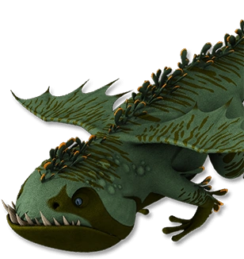

La terreur des profondeurs océaniques
| Catégorie | Corrosifs |
| Type de feu | Boules de goudron enflammé |
| Taille | 45 mètres |
| Envergure | 60 mètres |
| Poids | 80 000 kg |
| Couleur | Noir, violet sombre |
| Apprivoisable | Très difficile |
L'Abysse Mortifère est l'un des plus grands dragons marins jamais rencontrés. Il habite les profondeurs océaniques et remonte rarement à la surface. Son corps massif est adapté aux pressions abyssales. Il projette des boules de goudron enflammé qui brûlent même sous l'eau. Sa taille et sa puissance en font une menace redoutable pour les navires.